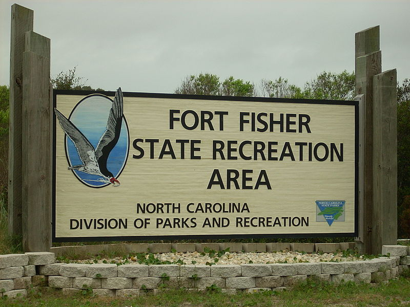
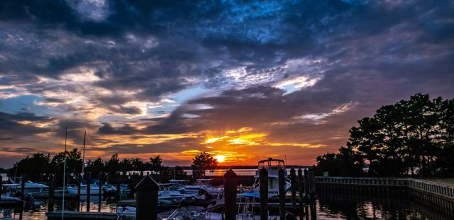

There is So Much To Do Here!
Discover our beaches, our history, and our hospitality Plan your summer vacation at Pleasure Island, home to some of the most beautiful North Carolina beaches. Enjoy the sand, surf, and our quaint, historic beach towns of Carolina Beach, Kure Beach, and historic Fort Fisher.
Come for the day, a weekend getaway, or a long beach vacation. You're sure to discover why the summer never ends on Pleasure Island!
You'll find everything you need to create your own custom itinerary for your Pleasure Island trip here on our site. Check the Event Calendar to see what's happening on the island. Find out Where to Stay and book your reservations now. Then choose ideas for Where to Eat, Where to Play, and any Local Services you might need along the way. We've got all your Pleasure Island vacation planning right here!
When you cross Snow's Cut Bridge, you'll leave the mainland and your worries behind. You have reached one of the most unique and vibrant North Carolina beaches that has a little something for everyone - young , old and in between. In minutes, you'll experience one of the most uniquely classical and authentic North Carolina barrier islands on the eastern seaboard.
Our beaches are easily accessible with a vibrant year round community only minutes south of historic Wilmington, NC and just a short ferry ride from Southport, NC and the Grand Strand of Myrtle Beach, SC.
Home to Carolina Beach, Kure Beach, and Historic Fort Fisher
Pleasure Island, encompassing Carolina Beach, Kure Beach and Historic Fort Fisher and home to some of the most unique beach towns and beaches in North Carolina, is nationally recognized as one of the East Coast's leading sports fishing ports with a wonderfully eclectic mix of colorful beach, harbor and waterway-front vacation homes, Oak lined streets and low country-styled neighborhoods, plus a lively downtown Business and Arts District combined with a 1950's era Boardwalk and Amusement Park.
And did we mention award winning seafood restaurants, ocean and river front camping with your 4x4, hiking and biking trails through five hundred year old Sea Pine forests, North Carolina's largest State Aquarium, a restored civil war-era Fort, ecologically diverse wetland marshes and, of course, over seven miles of North Carolina's most beautiful beaches with the gentle Atlantic lapping its shore.
Let Us Help You Plan Your Ideal Pleasure Island Beach Vacation
Pleasure Island is a truly distinctive and affordable vacation destination. Let us help you plan your vacation so you can get the most of what you want during your stay. Browse full profiles for events, activities, accommodations, restaurants, and services and add your favorites to your online itinerary. We promise you will never forget your visit to Pleasure Island, where the summer never ends!
Upcoming Events
- 2nd Annual Pleasure Island Golf Tournament March 24th, 2022
- 36th Annual Carolina Beach Music Festival June 4th, 2022
- Fort Fisher Summer Concert Series - July 8th, 2022
- Pets in the Park - October 8th, 2022
- Cape Fear Kite Festival - November 5th, 2022
- Pleasure Island Holiday Shopping Spree - November 18th, 2022